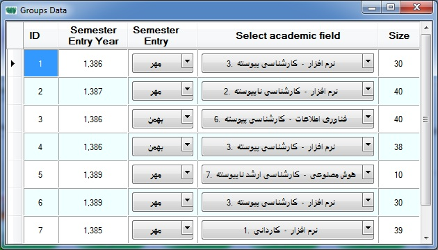

The Students
Group class has an ID and
the name of the student group, as well as the number of students (size of
group). It also contains a list of classes that the group
attends.

* Select academic field is a Branch full name (Education
Course Name + Education Degree + Branch
ID).
* Semester Entry the student group is entering turn means
that the first half and second half
year.
* Semester Entry Year means is what years the student
group is entering. for example : 2011 or 1390, The first year is based on
Anno Domini calendar and the second is based on the solar
calendar.
* Size is number of students in a Group for a specific
branch and
semester.